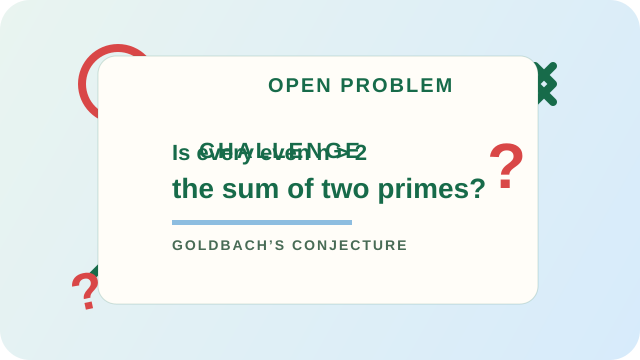

01
Foundations
Algebra
Learn how letters and numbers work together to solve unknown problems and reveal patterns.
Explore subjectNumbers, patterns, and human curiosity
From counting cattle in ancient Mesopotamia to mapping the stars in Egypt and Greece, maths began as a way to understand the world around us.
Discover the storyAnother problem to explore

Goldbach’s conjecture asks whether every even integer above 2 can be written as the sum of two prime numbers.
Choose your starting point
01
Foundations
Learn how letters and numbers work together to solve unknown problems and reveal patterns.
Explore subject02
Space and shape
Explore points, lines, angles, and shapes while discovering how maths describes the world around us.
Explore subject03
Change and motion
Understand rates of change, movement, and growth with the maths behind many modern discoveries.
Explore subject04
Everyday maths
Build confidence with percentage change, reverse percentages, and real-world problems.
Explore subject05
Chance and risk
Use sample spaces, tree diagrams, and probability rules to predict what might happen.
Explore subject06
Angles and triangles
Use sine, cosine, and tangent to solve problems involving right-angled triangles.
Explore subject07
Data and evidence
Read data clearly with averages, charts, scatter graphs, and measures of spread.
Explore subjectA quick maths check